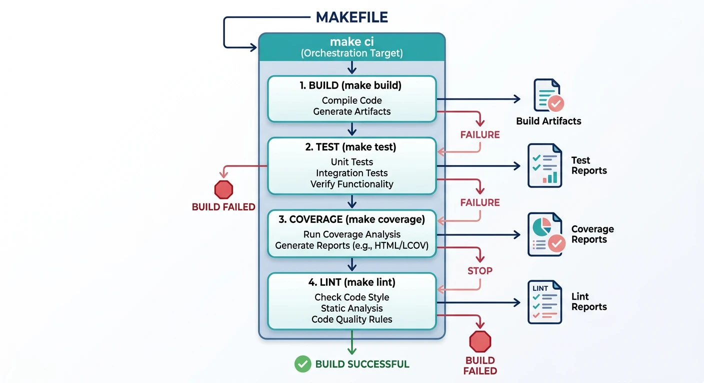
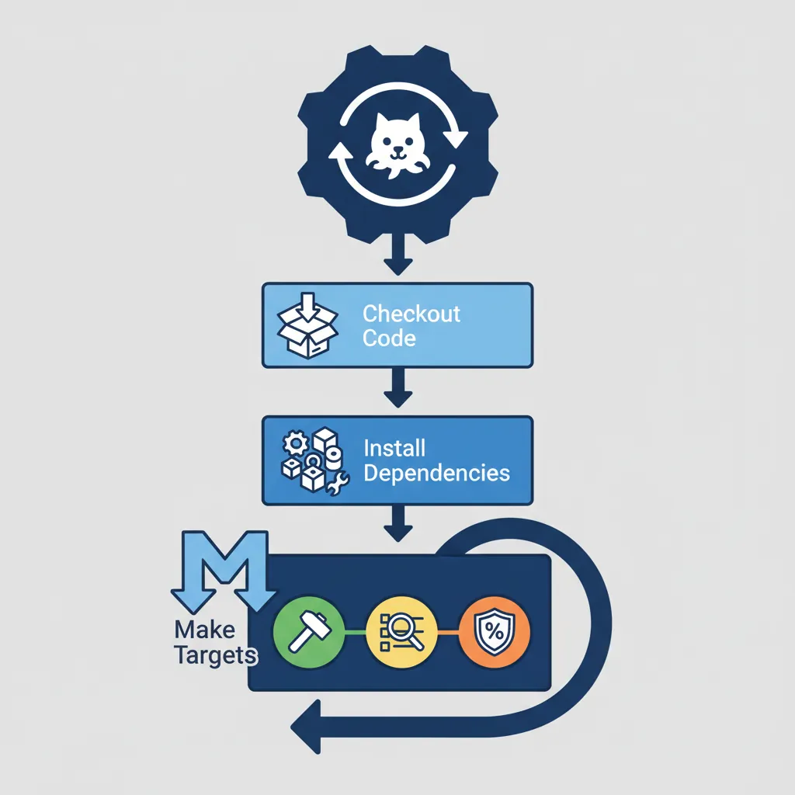
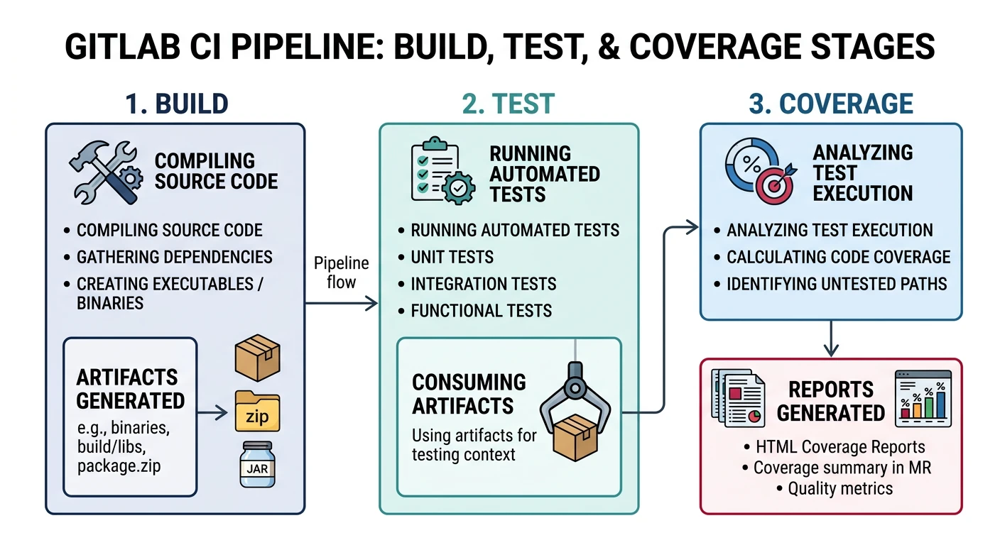
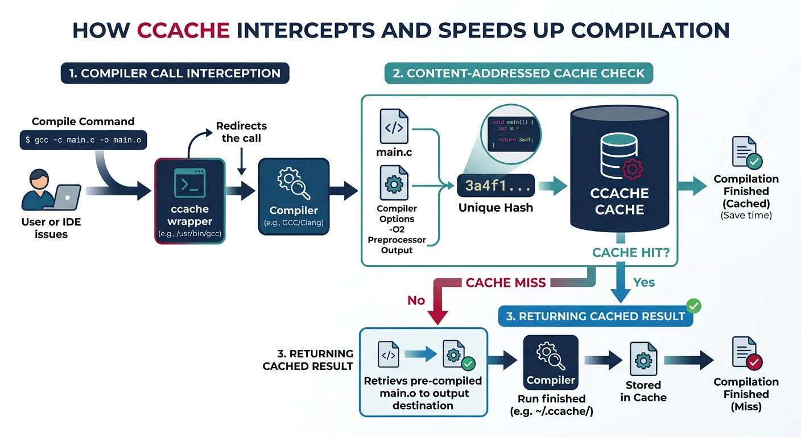
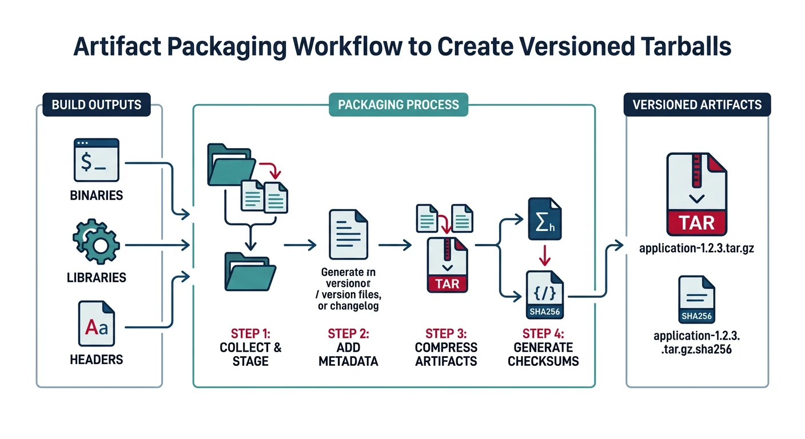

We use cookies to enhance your browsing experience, serve personalized content, and analyze our traffic. By clicking "Accept All", you consent to our use of cookies. See our Privacy Policy for more information.
Wire your Makefile directly into GitHub Actions and GitLab CI. Define CI-friendly targets, use ccache to cache object files across runs, produce deterministic build artifacts, and manage parallel matrix jobs across architectures and compilers — all through the Makefile interface.
Part 14 of 16 — GNU Make Mastery Series. The best CI pipelines are thin wrappers around the Makefile. A pipeline YAML file should contain almost no build logic — it should install dependencies, then call make ci. This way, developers can run the exact same build locally.
NPROC := $(shell nproc 2>/dev/null || sysctl -n hw.ncpu 2>/dev/null || echo 4)
# Master CI target — replaces shell logic in pipeline YAML files:
.PHONY: ci
ci: ## Full CI pipeline (build + test + coverage + lint)
$(MAKE) -j$(NPROC) all
$(MAKE) check
$(MAKE) coverage
$(MAKE) lint
@echo "CI pipeline complete"
# Separate fast-feedback target for pull requests:
.PHONY: ci-fast
ci-fast: ## Fast CI for PRs (build + test only)
$(MAKE) -j$(NPROC) all
$(MAKE) test

CI-friendly targets: make ci orchestrates the full pipeline while make ci-fast provides quick feedback for pull requests
Detecting CI Environment
# CI systems set CI=true (GitHub Actions, GitLab CI, CircleCI, Jenkins, etc.)
ifdef CI
# Disable color output (cleaner logs)
CFLAGS += -fdiagnostics-color=never
# Treat warnings as errors in CI:
CFLAGS += -Werror
# Make output non-interactive:
MAKEFLAGS += --no-print-directory
endif
GitHub Actions
Basic Workflow
# .github/workflows/build.yml
name: Build and Test
on: [push, pull_request]
jobs:
build:
runs-on: ubuntu-latest
steps:
- uses: actions/checkout@v4
- name: Install build dependencies
run: sudo apt-get install -y gcc make lcov
- name: Build
run: make -j$(nproc) all
- name: Run tests
run: make check
- name: Coverage report
run: make coverage
- name: Upload coverage to Codecov
uses: codecov/codecov-action@v4
with:
files: coverage.info

GitHub Actions workflow: checkout code, install dependencies, then delegate build/test/coverage entirely to Make targets
Matrix Builds
jobs:
matrix-build:
strategy:
matrix:
compiler: [gcc, clang]
os: [ubuntu-latest, ubuntu-22.04]
arch: [x86_64]
runs-on: ${{ matrix.os }}
steps:
- uses: actions/checkout@v4
- name: Build with ${{ matrix.compiler }}
# Pass CC as Makefile variable override from CLI:
run: make -j$(nproc) CC=${{ matrix.compiler }} all
- name: Test
run: make test CC=${{ matrix.compiler }}
Object File Caching
- name: Cache ccache directory
uses: actions/cache@v4
with:
path: ~/.cache/ccache
# Key includes OS, compiler, and a weekly date so it refreshes regularly:
key: ccache-${{ runner.os }}-${{ matrix.compiler }}-${{ hashFiles('**/*.c', '**/*.h') }}
restore-keys: |
ccache-${{ runner.os }}-${{ matrix.compiler }}-
ccache-${{ runner.os }}-
- name: Build with ccache
env:
CCACHE_DIR: ~/.cache/ccache
run: |
ccache --zero-stats
make -j$(nproc) CC="ccache ${{ matrix.compiler }}" all
ccache --show-stats
GitLab CI
# .gitlab-ci.yml
image: gcc:latest
variables:
NPROC: "4"
stages:
- build
- test
- coverage
build:
stage: build
script:
- make -j$NPROC all
artifacts:
paths:
- build/
expire_in: 1 hour
test:
stage: test
dependencies:
- build
script:
- make test
coverage:
stage: coverage
dependencies:
- build
script:
- apt-get install -y lcov
- make coverage
coverage: '/lines\.*: \d+\.\d+%/'
artifacts:
paths:
- coverage-html/
reports:
coverage_report:
coverage_format: cobertura
path: coverage.xml

GitLab CI pipeline: build stage produces artifacts, test stage consumes them, and coverage stage generates HTML reports
ccache Integration
# Optional wrapper: use ccache if available on the system
CCACHE := $(shell command -v ccache 2>/dev/null) # find ccache in $PATH
ifneq ($(CCACHE),) # if ccache was found...
CC := ccache $(CC) # prefix compiler with ccache
CXX := ccache $(CXX) # same for C++
endif
# Share cache across git worktrees:
# CCACHE_BASEDIR normalises paths so different clones get cache hits.
export CCACHE_BASEDIR := $(shell git rev-parse --show-toplevel 2>/dev/null || echo .)
# Show cache statistics after build:
.PHONY: ccache-stats
ccache-stats:
ccache --show-stats

ccache intercepts compiler invocations and returns cached object files on content-hash match, dramatically reducing rebuild times
ccache tip: Set CCACHE_COMPRESS=1 and CCACHE_MAXSIZE=5G in your CI environment. On a project with 1,000 source files, ccache can reduce a full rebuild from 4 minutes to under 30 seconds on cache hit.
Artifact Management
VERSION ?= $(shell git describe --tags --always) # e.g. v1.2.3 or abc1234
ARTIFACT := myapp-$(VERSION)-linux-amd64.tar.gz
.PHONY: artifact
artifact: all ## Create CI artifact archive
mkdir -p artifact/bin artifact/lib artifact/include
cp build/$(TARGET) artifact/bin/
cp build/lib$(PROJECT).a artifact/lib/ 2>/dev/null || true # || true: ignore if no lib
cp include/*.h artifact/include/ 2>/dev/null || true # || true: ignore if none
tar czf $(ARTIFACT) -C artifact .
sha256sum $(ARTIFACT) > $(ARTIFACT).sha256 # checksum for download verification
@echo "Artifact: $(ARTIFACT)"
.PHONY: artifact-clean
artifact-clean:
rm -rf artifact/ $(ARTIFACT) $(ARTIFACT).sha256

Artifact management: package versioned binaries, libraries, and headers into tarballs with SHA256 checksums for CI distribution
Try It — CI-Style Build & Artifact
Create a project with CI targets and artifact packaging:
mkdir -p src include
git init -q # VERSION uses git describe
cat > include/app.h << 'EOF'
#ifndef APP_H
#define APP_H
void greet(void);
#endif
EOF
cat > src/main.c << 'EOF'
#include <stdio.h>
#include "app.h"
void greet(void) { printf("Hello from CI build\n"); }
int main(void) { greet(); return 0; }
EOF
cat > Makefile << 'EOF'
CC := gcc
CFLAGS := -Wall -Wextra -Iinclude -O2
TARGET := myapp
PROJECT := myapp
VERSION ?= $(shell git describe --tags --always 2>/dev/null || echo 0.0.1)
ARTIFACT := $(PROJECT)-$(VERSION)-linux-amd64.tar.gz
.PHONY: all ci artifact artifact-clean clean info
all: build/$(TARGET)
build/$(TARGET): src/main.c
@mkdir -p build
$(CC) $(CFLAGS) -o $@ $^
ci: clean all ## CI gate target
@echo "CI build passed — version $(VERSION)"
artifact: all ## Create CI artifact archive
mkdir -p artifact/bin artifact/include
cp build/$(TARGET) artifact/bin/
cp include/*.h artifact/include/ 2>/dev/null || true
tar czf $(ARTIFACT) -C artifact .
sha256sum $(ARTIFACT) > $(ARTIFACT).sha256
@echo "Artifact: $(ARTIFACT)"
artifact-clean:
rm -rf artifact/ $(ARTIFACT) $(ARTIFACT).sha256
clean: artifact-clean
rm -rf build
info:
@echo "CC = $(CC)"
@echo "CFLAGS = $(CFLAGS)"
@echo "VERSION = $(VERSION)"
@echo "TARGET = $(TARGET)"
@echo "ARTIFACT = $(ARTIFACT)"
EOF
make info
make ci
make artifact
tar tzf myapp-*.tar.gz # inspect archive contents
cat myapp-*.sha256 # verify checksum
make clean
Continue the Series
Part 15: Advanced Make & Debugging
Master --debug=a, -p database dumps, $(warning), dynamic rule generation, and Make evaluation traps.